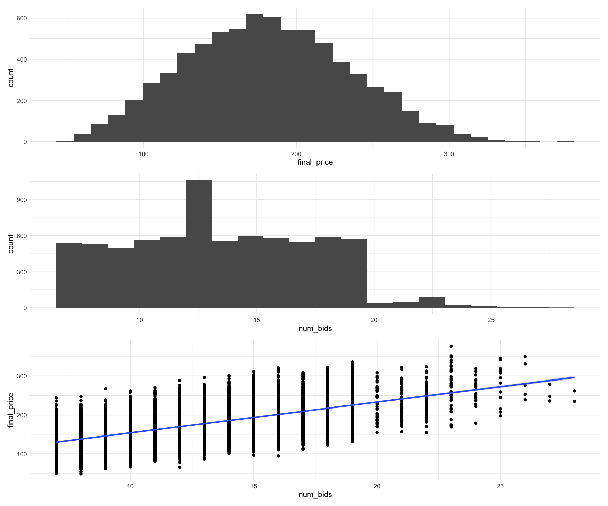
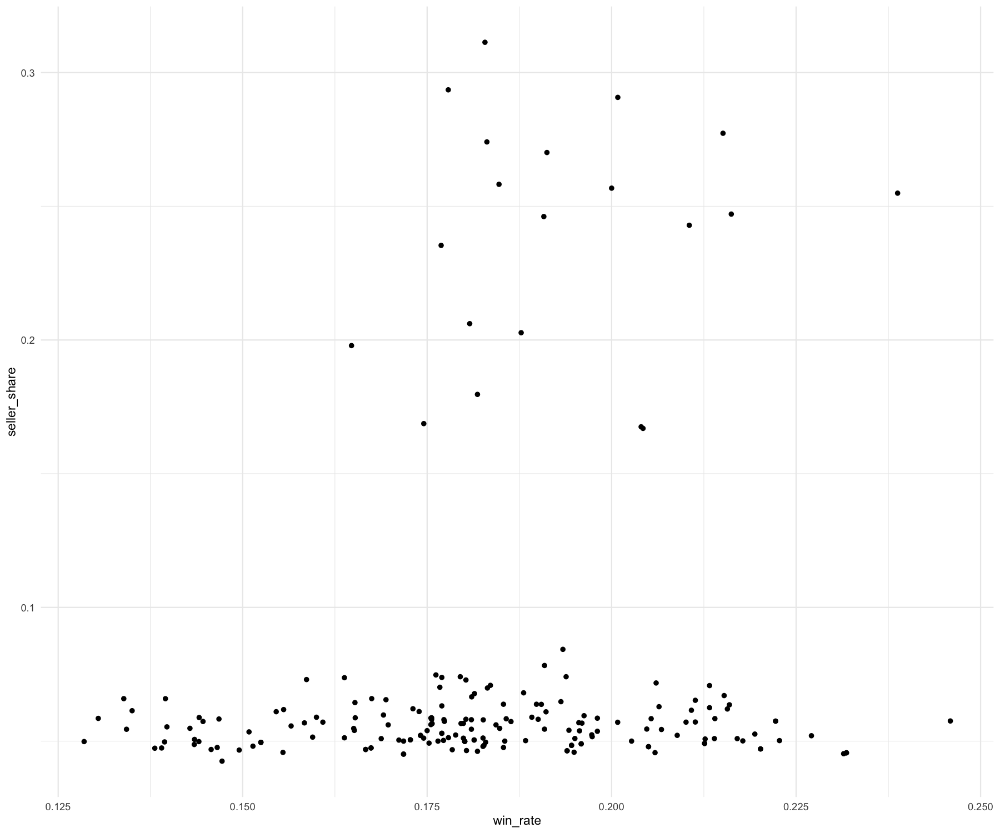

Tutorial Class 10 Set 01 - Storing & Retrieving Data¶
Learning Goals¶
By the end of this tutorial, you should be able to:
- Apply tidyverse workflows across alternative data sources (CSV, JSON Lines, DuckDB) to wrangle, flatten, and join auction data into tidy tables suitable for analysis.
- Analyse outcomes and telemetry by creating visuals and simple metrics (
seller_share,win_rate) to identify patterns that could indicate shill behaviour.
The Business Challenge: Identifying Shill Bidding¶
Online auctions are big business. Platforms like eBay, Yahoo! Auctions, and specialist marketplaces connect millions of buyers and sellers every day. But with opportunity comes risk: not every bidder is playing fair.
One form of fraud is called shill bidding. This happens when sellers (or their associates) secretly bid on their own items. The goal isn’t to win the auction, but to drive up the price and trick genuine buyers into paying more than they otherwise would. Shill bidders might:
- Place bids just high enough to outbid real customers, forcing them to keep bidding.
- Use multiple accounts or devices to hide their identity.
- Bid early and often to create the illusion of demand.
For an auction platform, shill bidding creates serious problems:
- It damages buyer trust, which can reduce participation and long-term revenue.
- It raises legal and reputational risks if fraud is not detected.
- It can distort the competitive landscape for honest sellers.
Your task in this exercise is to step into the role of an analyst at an online auction company. You’ve been asked to examine bidding data and look for patterns that might indicate suspicious activity. To do this, you’ll need to:
- Explore the auctions data provided in multiple formats (CSV, JSON, database).
- Use wrangling and visualisation tools to spot differences between ordinary buyers and suspicious bidders.
- Interpret these patterns in business terms: would a manager at the auction platform be worried?
The Data: Auction Bids and Devices¶
We’ll be working with synthetic data that simulates an online auction platform. It comes in a few different formats:
- CSV / DuckDB: structured data on auctions, bidders, bid amounts, and timestamps.
- JSON: extra details about each bidder’s activity, such as the devices or sessions they used.
Together, these files let us see not just who is bidding and how much, but also how they are bidding, which can be a clue for spotting suspicious behaviour.
The Method: Wrangling Data Across Backends¶
In this tutorial, the focus isn’t just on wrangling data. It is on seeing how the same tidyverse tools work across different backends. We’ll be using:
dplyr: to filter, group, summarise, and join data.tidyr: to reshape nested or messy data into tidy tables.
You’ll apply these verbs on top of different data sources:
- Flat files (CSV)
- Databases (DuckDB)
- Nested structures (JSON)
The key idea is that once you know the tidyverse workflow, it carries over no matter where the data lives.
library(tidyverse) # Core tidyverse for wrangling and plotting
library(patchwork) # Combine multiple plots
library(jsonlite) # For reading JSON files
library(DBI) # For working with databases
library(duckdb) # For working with duckdb databases
Prepare these Exercises before Class¶
Prepare these exercises before coming to class. Plan to spend 30 minutes on these exercises.
Exercise 1: Auction Results Baseline¶
(a)
Read the CSV file located at data/auction_results.csv and examine its structure by completing the code below:
# Load the data
auction_results <-
YOUR_CODE("data/auction_results.csv")
# Examine the structure
YOUR_CODE(auction_results)
(b)
What does one row represent in the dataset? Which columns look most informative for understanding auction outcomes?
(c)
Produce 3 plots using the starter code below:
- A histogram of
final_price - A histogram of
num_bids - A scatterplot of the relationship between
final_priceandnum_bids.
p1 <-
auction_results |>
ggplot() +
geom_histogram(aes(x = YOUR_CODE)) +
theme_minimal()
p2 <-
auction_results |>
ggplot() +
YOUR_CODE(aes(x = YOUR_CODE), bins = YOUR_CODE) +
theme_minimal()
p3 <-
auction_results |>
ggplot(aes(x = YOUR_CODE, y = YOUR_CODE)) +
YOUR_CODE() +
geom_smooth(method = "lm") +
theme_minimal()
p1 / p2 / p3
(d)
Provide a short explanation of your findings from (c). Are there any patterns that are suggestive of shill bidding?
(e)
Next, let’s explore how certain auction outcomes vary across sellers. Complete the starter code below to produce summary statistics by seller:
seller_profile <-
auction_results |>
group_by(seller_id) |>
summarise(
n_auctions = YOUR_CODE(),
median_price = YOUR_CODE(final_price, na.rm = TRUE),
median_bids = YOUR_CODE(num_bids, na.rm = TRUE),
share_missing_winner = YOUR_CODE(is.na(YOUR_CODE)) / n_auctions,
.groups = "drop"
) |>
arrange(YOUR_CODE(n_auctions))
(f)
Based on the seller profiles in (e), are there any patterns suggestive of shill bidding? What further information would you need to confirm any suspicion?
Solution
(a)
# Load the data
auction_results <-
read_csv("data/auction_results.csv")
# Examine the structure
glimpse(auction_results)
Rows: 7,463
Columns: 7
$ auction_id <chr> "A00001", "A00002", "A00003", "A00004", "A00005", ...
$ item_id <chr> "I00001", "I00002", "I00003", "I00004", "I00005", ...
$ seller_id <chr> "S00032", "S00027", "S00012", "S00027", "S00003", ...
$ final_price <dbl> 141.3800, 110.4400, 286.0400, 172.5300, 195.2600, ...
$ num_bids <dbl> 15, 10, 17, 12, 14, 13, 9, 20, 14, 17, 19, 16, 10, ...
$ winner_id <chr> "B00038", "B00084", "B00093", "B00133", "B00049", ...
$ auction_end_date <dttm> 2024-12-04 06:00:00, 2024-12-20 18:00:00, ...
(b)
One row = one auction outcome for a specific item_id run by a seller_id.
Most informative for outcomes: final_price (price result), num_bids (competitive intensity) and seller_id (lets us compare performance across sellers).
(c)
p1 <-
auction_results |>
ggplot() +
geom_histogram(aes(x = final_price)) +
theme_minimal()
p2 <-
auction_results |>
ggplot() +
geom_histogram(aes(x = num_bids), bins = 20) +
theme_minimal()
p3 <-
auction_results |>
ggplot(aes(
x = num_bids,
y = final_price)
) +
geom_point() +
geom_smooth(method = "lm") +
theme_minimal()
p1 / p2 / p3

(d)
Findings from (c):
- num_bids histogram: there’s a big spike at exactly ~15 bids and a sharp drop beyond ~20. That heap at one count is unusual—could be a platform rule, data artifact, or coordinated behaviour to hit a target count. Worth a note.
- num_bids vs final_price: clear positive trend (more bids → higher price), but with wide vertical spread at each bid count. In the far right columns (20–27 bids) there are still relatively low closing prices, which fits the “many bids, modest price” review pattern.
For part (d), the main review signals are (i) the heap at 15 bids and (ii) high-bid-count auctions that still close near the lower half of prices. These are suggestive patterns, not proof.
(e)
seller_profile <-
auction_results |>
group_by(seller_id) |>
summarise(
n_auctions = n(),
median_price = median(final_price, na.rm = TRUE),
median_bids = median(num_bids, na.rm = TRUE),
share_missing_winner = sum(is.na(winner_id)) / n_auctions,
.groups = "drop"
) |>
arrange(desc(n_auctions))
(f)
Interpreting seller profiles and additional evidence needed
Possibly suggestive seller patterns (from n_auctions, median_price, median_bids):
- High
median_bidsbut low median_price across many auctions. - Extreme
median_price(much higher/lower than peers) given similarmedian_bids. - Further information required to assess/confirm, such as:
- Bid-level timelines (who bid, when, increments, rapid back-and-forth patterns).
- Repeated bidder–seller ties (same bidder frequently active in the same seller’s auctions).
- Device/IP or account linkage between seller and active bidders (from JSON/telemetry).
Exercise 2: Digging Deeper into User Behaviour¶
In Exercise 1, we built a market baseline from auction outcomes: prices, bid counts, and seller summaries. That showed us where to look, but not how those outcomes happened. Next, we’ll bring in behavioural telemetry from a JSON file (devices/sessions). Using dplyr/tidyr verbs, we’ll flatten the nested JSON and link it to our auctions so we can ask: who was active, on which devices, and how activity clustered around particular sellers.
(a)
An example record in the JSON file data/bids.jsonl is as follows:
{
"auction_id": "A00001",
"bid_time": "2024-11-28T23:27:00Z",
"bidder": {
"id": "B00153",
"rating": 83,
"country": "AU"
},
"amount": 21.43,
"device": {
"os": "iOS",
"browser": "Firefox"
},
"auto_bid_flag": false,
"ip_address": "203.0.113.189"
}
Explain the structure of this record in words (what’s at the top level vs. what’s nested, and what fields each nested object contains).
(b)
Now let’s load the data from the file data/bids.jsonl and examine the first two rows. Complete the starter code below and identify any nested columns:
Streaming JSON has a different structure.
This JSON file has a different structure than we saw in the reading and in the lecture. It’s called streaming JSON (or sometimes “JSON Lines”): one complete JSON record per line, with no surrounding [] array and no commas between records.
Think of it like a log file: one complete JSON record per line. (Regular JSON is often one big list: [{...}, {...}, ...].)
Why it is used: it handles large files smoothly because you can read it line by line without loading everything.
How to load in R: use stream_in() (not read_json()).
Common gotcha: don’t add brackets or commas between lines; each line must be valid JSON on its own.
bids_json <- stream_in(file("YOUR_FILE_NAME"))
head(YOUR_DATA_SET, 2)
(c)
Complete the code below to unnest the JSON data:
bids_json <-
bids_json |>
YOUR_FUNCTION(YOUR_VARIABLE, names_sep = "_") |>
YOUR_FUNCTION(YOUR_VARIABLE, names_sep = "_")
(d)
One possible review signal is multiple bidders using the same IP address. Explain why this could matter, then complete the code below to isolate those instances.
Tip- What’s an IP address (and why we care)?
- Think of an IP address like a street address for a device on the internet. It helps websites know where to send data.
- On most shared Wi-Fi (homes, offices, libraries), many people/devices can appear under the same public IP. So “same IP” ≠ “same person.”
- IPs can change over time (dynamic addresses) and can be hidden/changed with VPNs — so they’re imperfect identity signals.
same_ip <-
bids_json |>
distinct(auction_id, ip_address, bidder_id) |>
count(YOUR_VARIABLE, YOUR_VARIABLE) |>
filter(YOUR_CONDITION) |>
arrange(desc(n))
(e)
Another possible review signal is auto-bidding. Explain when auto-bids might be consistent with shill bidding versus legitimate behaviour. Complete the code below to measure the share of auto-bids per auction.
Tip - What is auto-bidding (proxy bidding)?
- It’s a feature where you set a maximum price you’re willing to pay and the system bids for you automatically in small steps to keep you on top—without you watching the auction.
- Why people use it: convenience and to avoid overbidding in the moment.
- What it looks like in the data: a series of quick, incremental bids appearing from the same bidder as others place bids.
- Important: auto-bidding is normal. It’s only review-worthy if you also see other flags (e.g., shared IPs, unusual timing patterns, repeated ties to the same seller).
auto_bids <-
bids_json |>
group_by(auction_id) |>
summarise(
num_auto_bids = sum(YOUR_VARIABLE, na.rm = TRUE),
total_bids = YOUR_FUNCTION(),
share_auto = YOUR_VARIABLE / YOUR_VARIABLE
) |>
arrange(desc(num_auto_bids))
(f)
Let’s combine the data on shared IP addresses and auto-bids into one data frame. Complete the code below, and then identify any auctions that might warrant review. Explain your answer.
# aggregate IP data to the auction level for easy join
same_ip_auctions <-
same_ip |>
group_by(auction_id) |>
summarise(
n_shared_ips = n(), # how many IPs in this auction were used by 2+ bidders
max_shared_n = max(n), # largest number of bidders sharing a single IP
.groups = "drop"
)
shill_signals <-
same_ip_auctions |>
left_join(YOUR_DATA, by = "auction_id") |>
arrange(desc(n_shared_ips), desc(share_auto))
Solution
(a)
Top level: auction_id, bid_time, amount, auto_bid_flag, ip_address.
Nested objects:
-
bidder → id, rating, country
-
device → os, browser
After flattening, you’d expect columns like bidder_id, bidder_rating, device_os, device_browser.
(b)
The nested columns are bidder and device (each is a small object that needs unnesting). Everything else is top-level.
bids_json <- stream_in(file("data/bids.jsonl"))
head(bids_json, 2)
(c)
bids_json <-
bids_json |>
unnest_wider(bidder, names_sep = "_") |>
unnest_wider(device, names_sep = "_")
(d)
Multiple bidders on the same IP within the same auction can indicate coordinated accounts or one person switching identities. However, shared Wi-Fi (homes, offices, libraries) and VPNs mean it’s only a weak signal—use it to review, not to conclude.
same_ip <-
bids_json |>
distinct(auction_id, ip_address, bidder_id) |>
count(auction_id, ip_address) |>
filter(n > 1) |>
arrange(desc(n))
(e)
Auto-bidding is a normal feature (proxy bidding up to a limit). It’s review-worthy when the share of auto-bids is unusually high and coincides with other flags (e.g., shared IPs, repeated bidder–seller ties, tight timing bursts); otherwise it’s often just convenience.
auto_bids <-
bids_json |>
group_by(auction_id) |>
summarise(
num_auto_bids = sum(auto_bid_flag, na.rm = TRUE),
total_bids = n(),
share_auto = num_auto_bids / total_bids
) |>
arrange(desc(num_auto_bids))
(f)
Focus on auctions where (i) at least one IP is shared by 2+ bidders in the same auction and (ii) the auto-bid share is high. Discuss what you think valid auto-bid shares are in class.
same_ip_auctions <-
same_ip |>
group_by(auction_id) |>
summarise(
n_shared_ips = n(), # how many IPs in this auction were used by 2+ bidders
max_shared_n = max(n), # largest number of bidders sharing a single IP
.groups = "drop"
)
shill_signals <-
same_ip_auctions |>
left_join(auto_bids, by = "auction_id") |>
arrange(desc(n_shared_ips), desc(share_auto))
In-Class Exercises¶
You will discuss these exercises in class with your peers in small groups and with your tutor. These exercises build from the exercises you have prepared above. You will get the most value from the class if you have completed those above before coming to class.
Exercise 3: Opening the auction database¶
So far, we have worked with an auction-level CSV file and bid-level JSON Lines data. Those files are useful, but they each give us only one view of the platform.
The database gives us several linked tables: bids, auctions, items, users, and orders. This lets us ask relational questions, such as which bidder appears in which seller’s auctions, without loading every table into memory at once. In this exercise, the goal is to orient yourself to the database and create a bidder-level activity summary that we will reuse in the next exercises.
Quarto gotcha: close your DuckDB connection before you Render
Quarto renders your document in a fresh R session. If you opened a DuckDB connection in the Console (or earlier chunk) and leave it open, that session may lock the .duckdb file, causing errors like “database is locked” or “unable to open database file.”
You can fix this by following one of these routes: Manage the connection inside the document and close it at the end
library(DBI)
library(duckdb)
con <- dbConnect(duckdb(), dbdir = "data/auctions.duckdb")
# ... your analysis ...
dbDisconnect(con, shutdown = TRUE)
If you connected in the Console, run:
dbDisconnect(con, shutdown = TRUE)
before clicking Render.
If you still see a lock, especially on Windows, restart R and render again.
(a)
Explain how a database differs from the CSV and JSON data sources we have used so far. Why is a database useful for this part of the shill-bidding investigation?
(b)
Connect to the database stored in data/auctions.duckdb and list the tables present in it by completing the code below.
con <- dbConnect(duckdb(), dbdir = "YOUR_FILENAME")
dbListTables(YOUR_CODE)
(c)
Inspect the tables. For each table, write a short note describing what one row appears to represent and which key column could link it to another table.
tbl(con, "bids") |> glimpse()
tbl(con, "YOUR_TABLE") |> glimpse()
tbl(con, "YOUR_TABLE") |> YOUR_FUNCTION()
YOUR_FUNCTION(con, "YOUR_TABLE") |> YOUR_FUNCTION()
YOUR_FUNCTION(YOUR_OBJECT, "YOUR_TABLE") |> YOUR_FUNCTION()
(d)
The first review question is simple: which bidders are most active? Complete the code below to count each bidder’s total number of bids and the number of auctions they have participated in.
bidder_activity <-
tbl(con, "bids") |>
group_by(YOUR_VARIABLE) |>
YOUR_VARIABLE(
total_bids = YOUR_FUNCTION(),
auctions_participated = YOUR_FUNCTION(YOUR_VARIABLE),
.groups = "drop"
) |>
collect()
(e)
Inspect bidder_activity. Why is high activity useful as a starting point for review, and why is it not enough to suggest shill bidding on its own?
Solution
(a)
A database holds multiple related tables linked by keys such as auction_id and item_id; CSV and JSON files are usually single data sources. The database is useful here because shill-bidding questions often require joins: bids need to be linked to auctions, auctions to items, items to sellers, and orders to winners.
(b)
con <- dbConnect(duckdb(), dbdir = "data/auctions.duckdb")
dbListTables(con)
(c)
tbl(con, "bids") |> glimpse()
Rows: ??
Columns: 4
Database: DuckDB 1.5.2 [root@Darwin 25.5.0:R 4.5.2//Users/.../data/auctions.duckdb]
$ auction_id <chr> "A00001", "A00001", "A00001", "A00001", "A00001", "A00001", ...
$ user_id <chr> "B00153", "B00062", "B00029", "B00084", "B00017", "B00027", ...
$ bid_time <dbl> 1732836420, 1732864260, 1732904640, 1732906740, 1732921920, ...
$ amount <dbl> 21.43, 35.52, 37.67, 47.99, 59.90, 62.62, 76.15, 85.74, ...
tbl(con, "auctions") |> glimpse()
Rows: ??
Columns: 4
Database: DuckDB 1.5.2 [root@Darwin 25.5.0:R 4.5.2//Users/.../data/auctions.duckdb]
$ auction_id <chr> "A00001", "A00002", "A00003", "A00004", "A00005", "A00006", ...
$ item_id <chr> "I00001", "I00002", "I00003", "I00004", "I00005", "I00006", ...
$ start_time <dbl> 1732831200, 1734433200, 1735948800, 1731920400, 1735542000, ...
$ end_time <dbl> 1733292000, 1734717600, 1736211600, 1732273200, 1735894800, ...
tbl(con, "users") |> glimpse()
Rows: ??
Columns: 5
Database: DuckDB 1.5.2 [root@Darwin 25.5.0:R 4.5.2//Users/.../data/auctions.duckdb]
$ user_id <chr> "S00001", "S00002", "S00003", "S00004", "S00005", "S00006", ...
$ role <chr> "seller", "seller", "seller", "seller", "seller", "seller", ...
$ join_date <int> 19987, 19903, 19986, 20039, 19962, 19897, 19965, 20013, ...
$ feedback_score <int> 157, 103, 3, 186, 160, 51, 27, 172, 100, 11, 110, 133, ...
$ country <chr> "US", "AU", "GB", "SG", "GB", "SG", "AU", "US", "SG", ...
```r
tbl(con, "items") |> glimpse()
Rows: ??
Columns: 4
Database: DuckDB 1.5.2 [root@Darwin 25.5.0:R 4.5.2//Users/.../data/auctions.duckdb]
$ item_id <chr> "I00001", "I00002", "I00003", "I00004", "I00005", "I00006", ...
$ category <chr> "Home", "Electronics", "Apparel", "Toys", "Home", "Collectibles", ...
$ reserve_price <dbl> 35.65, 64.72, 170.63, 87.50, 123.34, 65.95, 23.21, 98.37, ...
$ seller_id <chr> "S00032", "S00027", "S00012", "S00027", "S00003", ...
tbl(con, "orders") |> glimpse()
Rows: ??
Columns: 3
Database: DuckDB 1.5.2 [root@Darwin 25.5.0:R 4.5.2//Users/.../data/auctions.duckdb]
$ auction_id <chr> "A00001", "A00002", "A00003", "A00004", "A00005", "A00006", ...
$ winner_id <chr> "B00038", "B00084", "B00093", "B00133", "B00049", "B00092", ...
$ final_price <dbl> 141.3800, 110.4400, 286.0400, 172.5300, 195.2600, 151.3100, ...
Likely units of observation:
bids: one bid event in one auction by one user.auctions: one auction and its linked item.items: one item, including category, reserve price, and seller.orders: one completed auction outcome and winner.users: one platform user.
(d)
bidder_activity <-
tbl(con, "bids") |>
group_by(user_id) |>
summarise(
total_bids = n(),
auctions_participated = n_distinct(auction_id),
.groups = "drop"
) |>
collect()
(e)
High activity helps identify bidders worth reviewing because coordinated accounts often need to bid repeatedly to influence prices. But high activity alone is not enough: a bidder may simply be a frequent buyer, a specialist in a category, or a reseller. We need relationship and outcome evidence before interpreting the behaviour as suspicious.
Exercise 4: Measuring bidder-seller concentration¶
Activity tells us who bids a lot, but it does not tell us whether a bidder repeatedly supports the same seller. For shill-bidding review, that relationship matters: a bidder who focuses heavily on one seller’s auctions may be more interesting than an equally active bidder who spreads bids across many sellers.
In this exercise, we will link bid events to sellers and compute each bidder’s highest seller concentration: the share of that bidder’s bids that go to their top seller.
(a)
A colleague suggests counting how often the same bidder bids against the same seller and across how many auctions. Why might these metrics be useful for identifying possible shill bidding behaviour? What innocent explanation could produce the same pattern?
(b)
We will instead compute the share of one bidder’s bids that go to their top seller. What is the advantage of using a share rather than only raw bidder-seller counts?
(c)
Complete the code below. As you work through it, write one sentence explaining what each step contributes to the final concentration table.
# Step 1: rename to make easier to track
bids <-
tbl(con, "bids") |>
rename(bidder_id = user_id)
# Step 2: link bids to the seller whose auction they are participating in
bids_items <-
bids |>
left_join(
tbl(con, "auctions") |> select(auction_id, item_id),
by = "auction_id"
) |>
left_join(
tbl(con, "items") |> select(item_id, seller_id),
by = "item_id"
)
# Step 3: how many bids does each bidder make in total?
total_bids_per_bidder <-
bids_items |>
YOUR_FUNCTION(bidder_id, name = "total_bids")
# Step 4: how many bids does each bidder make to each seller?
bidder_seller_bids <-
bids_items |>
YOUR_FUNCTION(YOUR_VARIABLE, YOUR_VARIABLE, name = "bids_to_seller")
# Step 5: find each bidder's highest concentration on one seller
concentration <-
YOUR_DATASET |>
YOUR_FUNCTION(YOUR_DATASET, by = "bidder_id") |>
mutate(seller_share = YOUR_VARIABLE / YOUR_VARIABLE) |>
group_by(bidder_id) |>
slice_max(seller_share, n = 1) |>
collect()
(d)
Inspect concentration. Do any concentration ratios appear high enough to review? Identify a small set of bidders whose behaviour you would explore more closely, and explain your decision rule.
(e)
Why might a possible shill bidder’s share of bids to one seller be an intermediate value, such as 20-30 percent, rather than above 50 percent?
Solution
(a)
Repeated bidder-seller ties across many auctions can suggest coordination or price support for that seller. Innocent explanations include loyal customers, specialist collectors, repeat buyers in a niche category, local preference, or a small market where the same users often interact.
(b)
A share normalises for activity. Raw counts tend to rank very active bidders highly, even when they spread bids widely. seller_share asks a more comparable question: what proportion of this bidder’s activity is focused on their top seller?
(c)
# Step 1: rename to make easier to track
bids <-
tbl(con, "bids") |>
rename(bidder_id = user_id)
# Step 2: link bids to the seller whose auction they are participating in
bids_items <-
bids |>
left_join(
tbl(con, "auctions") |> select(auction_id, item_id),
by = "auction_id"
) |>
left_join(
tbl(con, "items") |> select(item_id, seller_id),
by = "item_id"
)
# Step 3: how many bids does each bidder make in total?
total_bids_per_bidder <-
bids_items |>
count(bidder_id, name = "total_bids")
# Step 4: how many bids does each bidder make to each seller?
bidder_seller_bids <-
bids_items |>
count(bidder_id, seller_id, name = "bids_to_seller")
# Step 5: find each bidder's highest concentration on one seller
concentration <-
bidder_seller_bids |>
left_join(total_bids_per_bidder, by = "bidder_id") |>
mutate(seller_share = bids_to_seller / total_bids) |>
group_by(bidder_id) |>
slice_max(seller_share, n = 1) |>
collect()
(d)
A reasonable first pass is to use a relative cutoff and a minimum activity check. For example, inspect bidders whose seller_share is well above the median and who have enough total bids for the ratio to be meaningful.
median_concentration <-
median(concentration$seller_share)
questionable_bidders <-
concentration |>
filter(
seller_share > 2 * median_concentration,
total_bids >= 10
)
This creates review candidates, not conclusions. A high concentration could still reflect legitimate specialisation.
(e)
A shill account may try to blend in by bidding across several sellers or product lines. A very active account can also place many bids with one seller while the percentage remains moderate. For review, an intermediate share can still be meaningful when combined with low win rates, timing patterns, or device/IP overlap.
Exercise 5: Combining concentration with win rates¶
Concentration is useful, but it is still incomplete. A genuine buyer may focus on one seller because they like that seller’s products. A possible shill bidder is more concerning when they appear often in a seller’s auctions but rarely win. That pattern is consistent with pushing prices up while avoiding the final purchase.
In this exercise, we will compute bidder win rates, combine them with seller concentration, and use the result to identify review candidates.
(a)
Explain why win rate adds useful context to the concentration metric. Why should win rate be calculated using distinct auctions rather than raw bid rows?
(b)
Calculate how often bidders win the auctions they participate in.
# Step 1: winners per auction
winners <-
tbl(con, "orders") |>
select(auction_id, winner_id)
# Step 2: distinct auctions each bidder joined
bidder_auctions <-
bids_items |>
YOUR_FUNCTION(bidder_id, auction_id)
# Step 3: join winners and compute win_rate
win_rates <-
bidder_auctions |>
YOUR_FUNCTION(winners, by = "auction_id") |>
mutate(won = bidder_id == winner_id) |>
group_by(bidder_id) |>
summarise(
auctions_participated = YOUR_FUNCTION(),
auctions_won = YOUR_FUNCTION(YOUR_VARIABLE, na.rm = TRUE),
.groups = "drop"
) |>
mutate(win_rate = YOUR_VARIABLE / YOUR_VARIABLE) |>
collect()
(c)
Join the win_rates data to the concentration data and save the combined dataset to data/shill_metrics.csv.
shill_metrics <-
YOUR_DATASET |>
YOUR_FUNCTION(YOUR_DATASET, by = "bidder_id")
YOUR_FUNCTION(YOUR_DATASET, "data/shill_metrics.csv")
(d)
Create a scatter plot showing the relationship between win_rate and seller_share.
ggplot(shill_metrics) +
geom_point(aes(x = YOUR_VARIABLE, y = YOUR_VARIABLE)) +
theme_minimal()
Which region of this plot would you treat as the strongest review zone for possible shill bidding? Explain why, and name one piece of additional evidence you would want before escalating the case.
(e)
Write a short manager-facing summary. Identify the type of bidder you would review first and explain why your language should describe the result as a review flag rather than proof of fraud.
(f)
Propose an alternative way to use the win_rate and concentration data, along with any other data you have access to in the exercise, to identify possible shill bidders. Explain why your method works. You can explain your method intuitively; you do not need to code a solution.
When you finish the database work, close the DuckDB connection:
dbDisconnect(con, shutdown = TRUE)
Solution
(a)
Win rate helps distinguish buyers who focus on a seller and actually buy from bidders who focus on a seller but rarely win. Win rate should use distinct auctions because one auction is one opportunity to win. Counting raw bids would make a bidder who places many bids in one auction look as if they had many separate chances to win.
(b)
# Step 1: winners per auction
winners <-
tbl(con, "orders") |>
select(auction_id, winner_id)
# Step 2: distinct auctions each bidder joined
bidder_auctions <-
bids_items |>
distinct(bidder_id, auction_id)
# Step 3: join winners and compute win_rate
win_rates <-
bidder_auctions |>
left_join(winners, by = "auction_id") |>
mutate(won = bidder_id == winner_id) |>
group_by(bidder_id) |>
summarise(
auctions_participated = n(),
auctions_won = sum(won, na.rm = TRUE),
.groups = "drop"
) |>
mutate(win_rate = auctions_won / auctions_participated) |>
collect()
(c)
shill_metrics <-
win_rates |>
left_join(concentration, by = "bidder_id")
write_csv(shill_metrics, "data/shill_metrics.csv")
(d)
ggplot(shill_metrics) +
geom_point(aes(x = win_rate, y = seller_share)) +
theme_minimal()

The strongest review zone is high seller_share and low win_rate: bidders who focus on one seller but rarely win. This is consistent with price support, but it is still only a flag. Additional evidence could include bid timing, repeated rapid outbidding, shared IP/device signals, account links, or whether the same bidder appears across many auctions from the same seller.
(e)
A suitable manager-facing summary would be:
“The first review group should be bidders with unusually high concentration on one seller and unusually low win rates. This pattern is consistent with accounts that help raise prices without intending to buy. It is not proof of fraud, because loyal bidders, niche markets, and small samples can produce similar patterns. We should treat these users as review candidates and check bid timing, device/IP overlap, and repeated seller links before escalating.”
(f)
One option is an excess win-rate approach. For each auction with k bidders, a neutral fair-chance win rate is roughly 1 / k. For each bidder, average that expected win rate across the auctions they entered, then compare actual win rate with expected win rate. Bidders with high seller concentration and actual win rates well below their expected win rates would be strong review candidates.
This is useful because it adjusts for auction crowding: a bidder who usually enters auctions with many competitors should naturally win less often than a bidder who enters small auctions.
dbDisconnect(con, shutdown = TRUE)